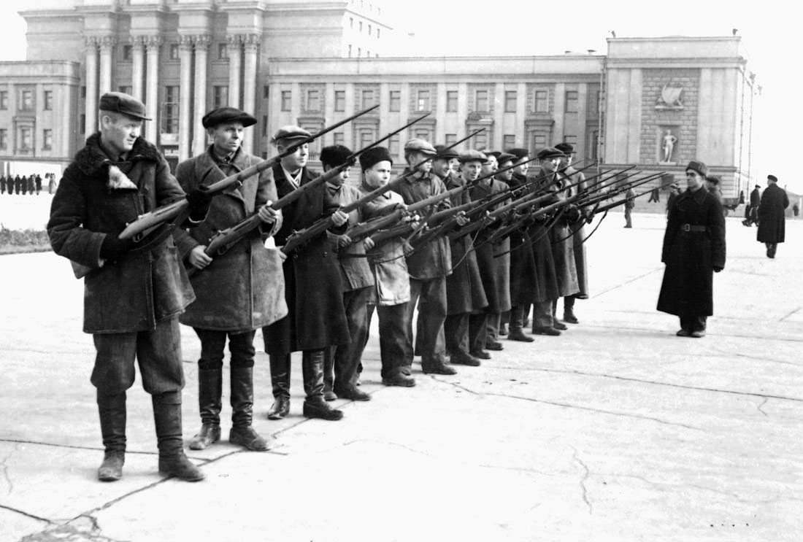

Куйбышев - Запасная столица
Осенью 1941 года немецко-фашистские войска перешли в наступление на советскую столицу, которая с 16 октября была объявлена на осадном положении.Тогда же по решению Государственного Комитета Обороны (ГКО) тыловой город Куйбышев был назначен запасной столицей СССР.
К тому моменту город уже являлся центром одного из крупнейших военных округов, имел важнейший железнодорожный узел и прямое сообщение с Уралом, Сибирью, Дальним востоком, Казахстаном и Средней Азией. Именно поэтому в Куйбышев были экстренно эвакуированы представители аппарата государственного управления. Кроме того, Куйбышев стал тыловым и промышленным центром - в первые годы войны сюда было перевезено 40 промышленных предприятий и военных заводов.
Почти одновременно к нам также переехали Верховный Совет СССР, Совнарком СССР, ряд наркоматов и главков, а также многие оборонные предприятия.В город также были эвакуированы Государственный академический Большой театр Оперы и балета, Ленинградский академический драматический театр и симфонический оркестр Всесоюзного радио. В куйбышевские библиотеки перешло более миллиона уникальных книг, в том числе знаменитая библиотека Вольтера.
Ныне большинство из нас лишь из школьных учебников знает, что происходило в нашем городе той тревожной осенью. В то время Куйбышев по сравнению с Москвой или Ленинградом вполне можно было бы назвать патриархальной глубинкой. И поэтому представьте себе потрясение, которое испытали рядовые горожане, когда совершенно неожиданно для них в соседних кварталах вдруг стали расселяться высокопоставленные руководители из столицы во главе со «всесоюзным старостой» М.И. Калининым,
Михаил Иванович Калинин
17 октября 1941 года в Куйбышев, «запасную столицу Советского Союза», прибыл Михаил Калинин. Человек, которого в народе называли «всесоюзным старостой». 7 ноября 1941 года, когда на главной площади Куйбышева проходит военный парад, Михаил Иванович вместе с другими первыми государственными лицами находится на трибуне. Для участия в параде, который для всей страны стал важнейшим событием, свидетельством того, что советская армия не сломлена под натиском гитлеровцев, сняли следовавшую на фронт 65-ю стрелковую дивизиюизвестные московские артисты, писатели и композиторы, заводские специалисты, но самое главное – сотни иностранцев, которые в то время для провинциального города были большой редкостью.
Большое количество фабрик и предприятий были эвакуированы в Самару во время Великой Отечественной войны из городов, которые стали добычей фашистов. Фабрики перевозили вместе с их рабочими, и численность горожан значительно выросла. За годы войны с аэродрома авиационного завода на фронт поднялись тысячи знаменитых штурмовиков ИЛ-2.
Для И.В. Сталина была построена специальная резиденция под землей «Бункер Сталина», с рабочим кабинетом на глубине 37 метров, которая является одной из центральных достопримечательностей города. В послевоенные годы Самара становится крупнейшим промышленным и культурным центром России. Здесь создаётся потенциал авиационной, машиностроительной, металлургической, электротехнической, кабельной, нефтеперерабатывающей и лёгкой промышленности. Самара превратилась и в крупнейший научный центр России. Так как заводы были преимущественно военными, Самарская область после войны стала закрытой. В этом качестве наш город жил и работал с осени 1941 года и в течение последующих двух лет.
В свете того громадного значения, которое имел Куйбышев в годы войны в качестве оборонного и политического центра всего СССР, надо признать, что историками всегда уделялось довольно мало внимания той роли, которую наш город играл как культурная столица всей страны того времени.